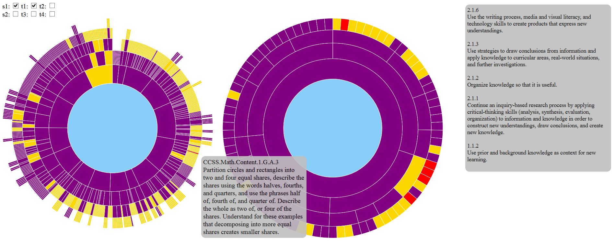
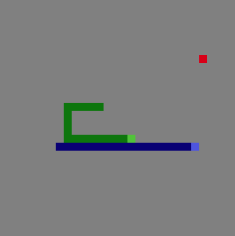
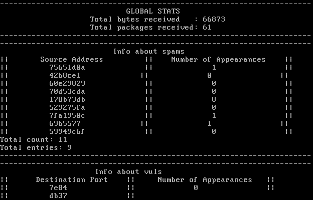

~ About Me ~
Hi there, my name's Daisy!
Computer Science
I'm currently a sophomore studying
computer science at Cornell University, set to graduate in May
2018. I chose computer science because I love to create new things
and solve puzzles, and computer science is a field that encompasses
those things and so much more. I am particularly interested in
computer vision and graphics, but I have interest in several other
areas of computer science as well, including game development and
cyber security.
I am constantly amazed by the power
that just a few (or many) lines of code hold. Computer science has allowed
us as a society to accomplish things we never thought possible, and
I look forward to continuing to push that boundary that separates
the impossible from the possible.
Check out my Projects section for some examples of the kinds of
projects I've worked on, or take a look at my Resume to learn more!
Photography
I am also an avid photograper.
I was originally inspired to seriously start photography back in
2011. What started simply as a way to document my summer quickly
grew into a love of capturing those fleeting moments in life that
ordinarily would just pass us by.
I believe the supposedly ordinary things in the world can be
extraordinary in their own right if only you stop for a moment
and look. That’s what I try to capture in my photography. It's more
than the way I view photography - it's the way I view the world.
Photography has taken me to amazing places, both literally and
figuratively, and I’ll continue to follow it — wherever the
clouds take me next.
If you're interested in seeing more of my photography, check out my photoblog,
Chasing Clouds!
~ Projects ~

A visualization of educational standards and the
"cross walks" between them. This is designed as a tool to
help teachers and other educational workers design well-rounded
curriculums that best encompass the skills that children need to learn
in order to succeed.
This visualization includes features such as hover highlighting and tooltips,
collapsing/expanding, zooming, "sticky" nodes, and graph selection/toggling.
Written in HTML and JavaScript using D3.

Eat or... well just eat and don't crash!
Snake is back! It's the classic game of eat and don't crash,
only this time your opponenet isn't just yourself. Race the AI
around the board and eat, eat, eat! Better eat fast, because
in this world, it's not just about survival of the fittest - it's
about survival of the biggest.
Written in Java.
Honeypot

A synchronized multicore honeypot that receives data packets and
detects if they are spam, evil, or vulnerable packets. Command packets
are received occassionally that updates the listings of spam, evil, or
vulnerable addresses or gives the honeypot other commands such as
printing stats. Stats can also be printed via any keystroke.
Written in C for CS 3410 in a team of 2.
~ Resume ~
Daisy Zheng
Ithaca, NY 14850
dhz9@cornell.edu
EDUCATION
- Cornell University
- College of Engineering
- Major: Computer Science, B.S. Minors: Business, Biology
- Expected Graduation: May 2018 GPA: 3.612
PROJECTS
- Data visualization of educational standards and their crosswalks, which includes features such interactive navigation and tooltips that provide detailed information about each node. Created using D3, HTML, and JavaScript.
- Synchronized multicore honeypot that receives data packets, detects if they are spam, evil, vulnerable, or command packets, performs actions based on instructions in command packets, and outputs stats on command. Written in C. (Cornell CS 3410 project, team of 2)
- Java algorithm that efficiently routes trucks to parcels such that it maximizes delivery speed and points collected in a delivery truck simulation. (Cornell CS 2110 project, team of 2)
- Python script that analyzes credit card data to classify subscribers by type and duration, calculate yearly revenue, and determine the years with the greatest revenue growth and loss.
WORK EXPERIENCE
- Cornell University College of Human Ecology February 2016 – Present
- Website Redesign Team – Content Mover
- Meet with clients from the College of Human Ecology to transfer content from the old website onto the new Drupal site, merging, editing, and redesigning as needed.
- Oxley Equestrian Center September 2014 – December 2014
- Barn Hand
- Provided food, water, and bedding for horses and led horses into and out of fields.
- Learned on the job, having had no prior experience with horses.
ENGINEERING EXPERIENCE
- WVBR 93.5 FM and CornellRadio.com February 2016 – Present
- Web Committee, DJ
- Currently designing and creating the new WVBR and CornellRadio.com websites, working mostly on front end.
- Host of a biweekly radio show on CornellRadio.com.
- Cornell Coding Boot Camp September 26, 2015
- Mentor
- Helped any participants who were experiencing coding difficulties or technical issues.
- Explained when JavaScript is used, how Git commands work, etc.
- Concrete Canoe Engineering Project Team September 2014 – May 2015
- Aesthetics Subteam, Team Historian
- Subleader of the display board project: scheduled meetings and guided design and construction of the display board.
- Helped design the stands, display board, and canoe in accordance to the NYC theme.
- Documented mix/mold subteam meetings and Cast Day for display and report use.